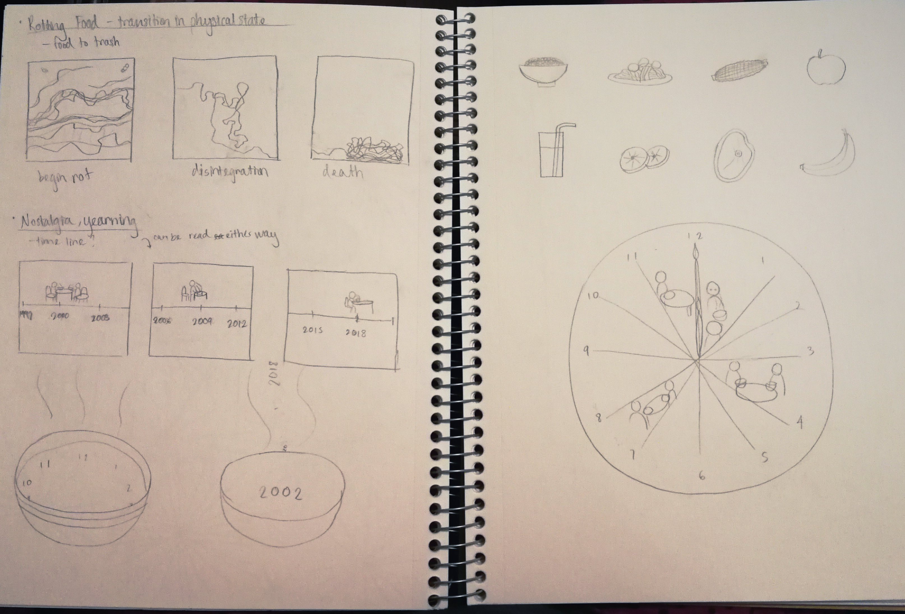
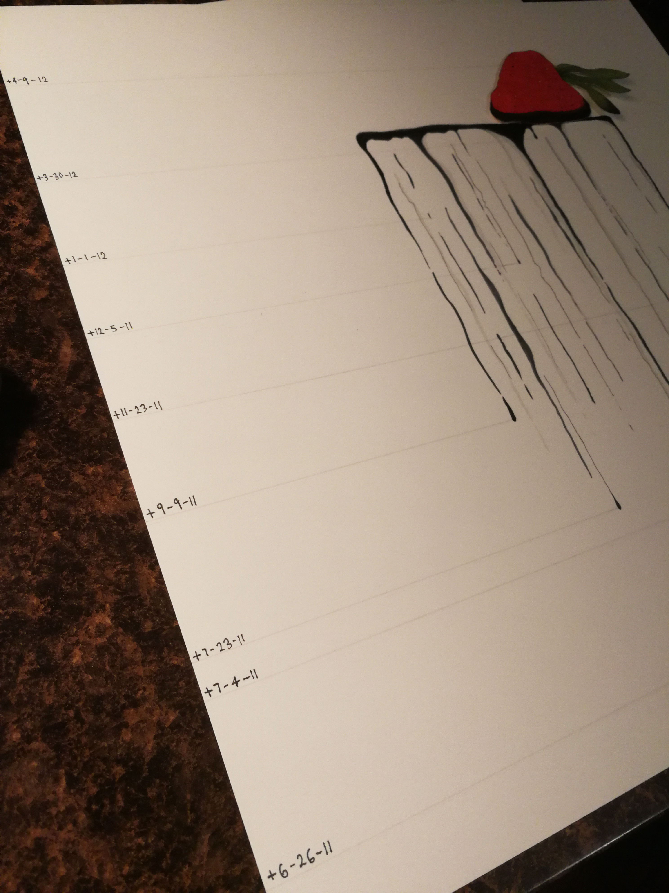
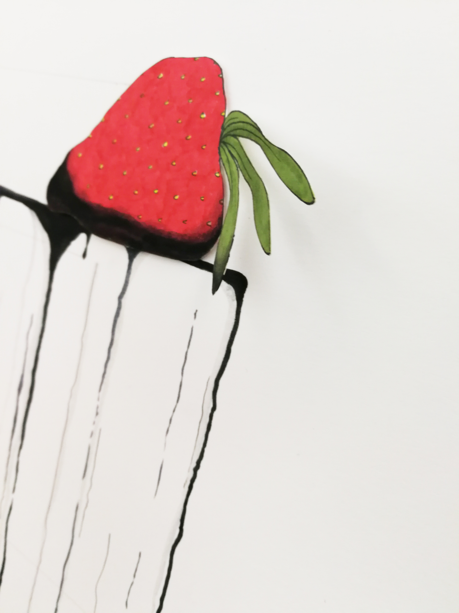

The purpose of this project was to explore the mapping of transitions and border crossings and how they can be understood emotionally and intellectually. The goal was not to depict these subjects in their literal form, but rather to map what it feels like to experience them.
Transitions and border crossings can take a number of different forms. They can be anything from waking up in the morning to traversing the boundaries of life and death. For this project, my groupmates wanted to center our designs around food, so for our initial theme, we chose “food as a portal to the past”. In other words, we wanted to capture the memories that well up when you smell a familiar dish. We felt that this was a good choice of topic for our maps since it is a multifaceted and layered experience. With my first draft, I wanted to show a change over time because it was the unit of measurement that all of our maps utilized. I depicted the temporal transition by creating a series of images that represent the journey of seeing food, smelling it, and experiencing the memory associated with it.

My first draft was critiqued with being too abstract and too impersonal. It was difficult to understand what the images meant and how they related to me on a deeper level, so I went back to the drawing board and tried to visualize food and time in different ways.
Despite my efforts, none of these ideas satisfied me. I felt as if my visual interpretations of time were unclear and that they required too much explanation to be effective, so I consulted my groupmates and we all agreed that a change of theme was needed since focusing on nostalgia proved to be difficult for all of us. From there, we decided to focus on “food and loss” because we felt as if we could it in a more concrete way than our first drafts. It was here that I experimented with the theme of rotting food; not only to explore the literal loss of the form and structure of food, but also the feeling of loss that such imagery would convey.

There were still some issues with this version of the design. I wanted to project feelings of loss and growth through the lines in the background of the main subject, the rotting strawberry while mapping out the process over time. I chose to do so by writing important personal dates on the top left corner of each panel, signifying loss, the passage of time, and rebirth, respectively; however, the dates were too small and were difficult to see, defeating the purpose of the temporal aspect of the map. So I tried again, simplifying the three panels into one for the final version of the project.

My first attempt at the final draft was crucial in nudging me towards a more robust actual final draft. In this version, I wanted to emphasize downward movement. I had abandoned the concept of rebirth from the previous draft because I thought that it would be too difficult to try to include all that I wanted to in this image. This particular draft was difficult to envision since I did not want to let go of a recurring smoke-like motif that appeared in several of my drafts. In past iterations, these lines were a strength, but trying to hold on so tightly to them in this draft was a weakness.
Once more, I created another iteration of my map; this time focusing only on downward motions. I did so by creating a dripping and pooling effect which emphasizes not only the loss of form but also the passage of time. These drops of rot are connected to particular dates as a sort of timeline. The dates are written in reverse order along the left side. I did this so that the audience could read the map from top to bottom or bottom to top. Additionally, the connection from the text to the images allows the map to be read from right to left or left to right.
I also wanted to create a sense of physical depth by layering pieces of Bristol paper on top of each other. I did this to show that the strawberry wants to escape its situation and reclaim its original form by transitioning from the 2D plane to the 3D plane.
Ultimately, the map is the story of my personal journey after experiencing the loss of my grandmother. The bottom-most date is the date of her passing and the top-most date is my birthday; the dates in between those days are other birthdays or holidays. I included these points because they represented the beginning of my journey and its progress over time. Furthermore, I decided to bring back the concept of rebirth in this map not only because it is meaningful to me, but also because it completes the cycle of loss. It would be wrong not to include the steadfastness of the strawberry rising above its own rot.

Together, my groupmates and I create a series of three maps, each depicting our own interpretations of food and loss. The image on the left depicts multiple images of melting butter overlapped onto each other, representing the unraveling of ones’ mental state over time. In the center is a timeline of sorts. It illustrates eating a meal together with friends and family in one space and time and then eating the same meal alone in another space and time, showing the loss of a collective experience. And of course, my map hangs next to theirs on the right.